Fitting Perspective
Preparing to fit data
To fit some data you must first load some data, activate one or more data sets, send those data sets to the fitting perspective, and select a model to fit to each data set.
Instructions on how to load and activate data are in the section Loading Data.
SasView can fit data in one of three ways:
- in Single fit mode - individual data sets are fitted independently one-by-one
- in Simultaneous fit mode - multiple data sets are fitted simultaneously to the same model with/without constrained parameters (this might be useful, for example, if you have measured the same sample at different contrasts)
- in Batch fit mode - multiple data sets are fitted sequentially to the same model (this might be useful, for example, if you have performed a kinetic or time-resolved experiment and have lots of data sets!)
Selecting a model
By default, the models in SasView are grouped into five categories
- Shapes - models describing ‘objects’ (spheres, cylinders, etc)
- Shape-Independent - models describing structure in terms of density correlation functions, fractals, peaks, power laws, etc
- Customized Models - SasView- or User-created (non-library) Python models
- Uncategorised - other models (for reflectivity, etc)
- Structure Factor - S(Q) models
Use the Category drop-down menu to chose a category of model, then select a model from the drop-down menu beneath. A graph of the chosen model, calculated using default parameter values, will appear. The graph will update dynamically as the parameter values are changed.
You can decide your own model categorizations using the Category Manager.
Once you have selected a model you can read its help documentation by clicking on the Description button to the right.
Show 1D/2D
Models are normally fitted to 1D (ie, I(Q) vs Q) data sets, but some models in SasView can also be fitted to 2D (ie, I(Qx,Qy) vs Qx vs Qy) data sets.
NB: Magnetic scattering can only be fitted in SasView in 2D.
To activate 2D fitting mode, click the Show 2D button on the Fit Page. To return to 1D fitting model, click the same button (which will now say Show 1D).
Category Manager
To change the model categorizations, either choose Category Manager from the View option on the menubar, or click on the Modify button on the Fit Page.
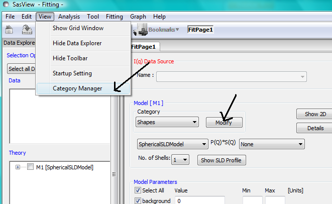The categorization of all models except the customized models can be reassigned, added to, and removed using Category Manager. Models can also be hidden from view in the drop-down menus.
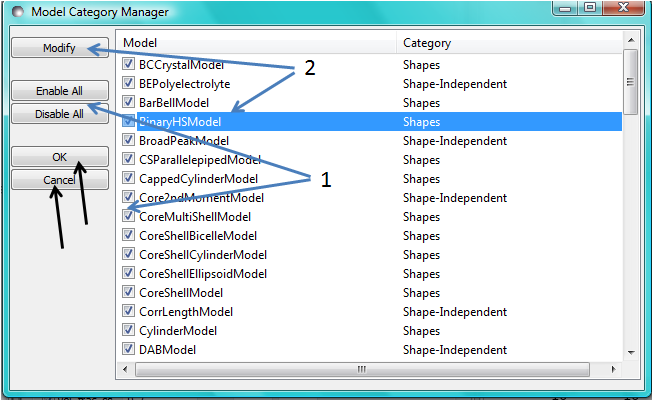Changing category
To change category, highlight a model in the list by left-clicking on its entry and then click the Modify button. Use the Change Category panel that appears to make the required changes.
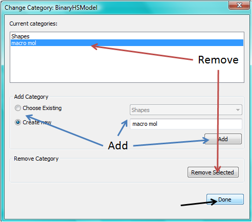To create a category for the selected model, click the Add button. In order to delete a category, select the category name and click the Remove Selected button. Then click Done.
Showing/hiding models
Use the Enable All / Disable All buttons and the check boxes beside each model to select the models to show/hide. To apply the selection, click Ok. Otherwise click Cancel.
NB: It may be necessary to change to a different category and then back again before any changes take effect.
Model Functions
For a complete list of all the library models available in SasView, see the section SasView Model Functions.
It is also possible to add your own models.
Adding your own models
There are currently two ways to add your own models to SasView:
- Using the Custom Model Editor
- By Writing a Plugin
NB: Because of the way these options are implemented, it is not possible for them to use the polydispersity algorithms in SasView. Only models in the model library can do this. At the time of writing (Release 3.1.0) work is in hand to make it easier to add new models to the model library.
Custom Model Editor
From the Fitting option in the menu bar, select Edit Custom Model.
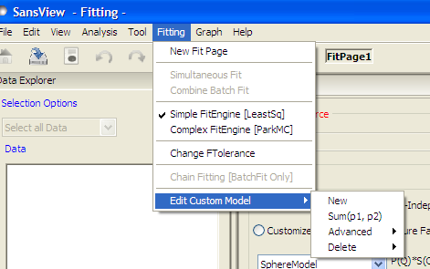and then one of the options
- New - to create a new custom model template
- Sum|Multi(p1,p2) - to create a new model by summing/multiplying existing models in the model library
- Advanced - to edit a new custom model
- Delete - to delete a custom model
New
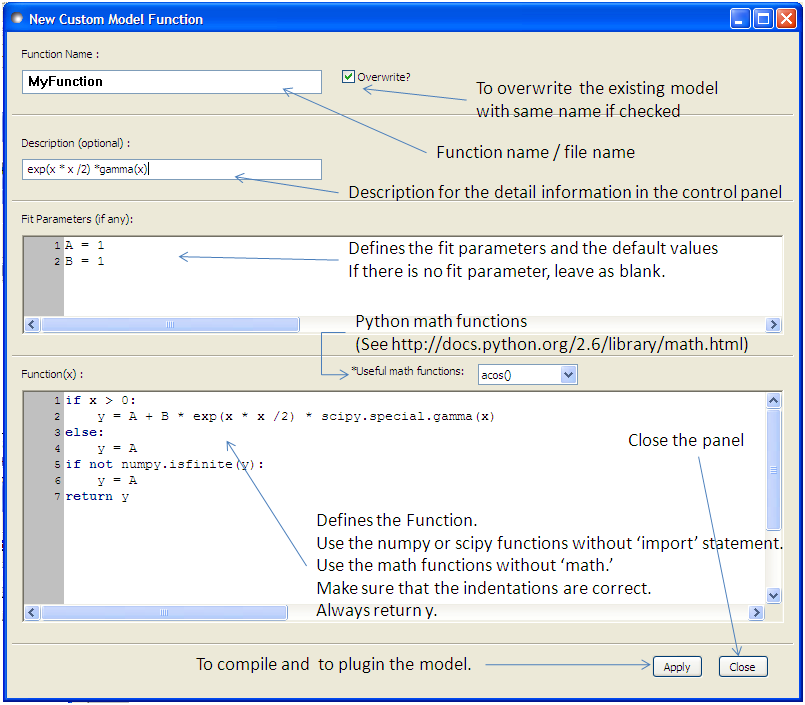A model template generated by this option can be viewed and further modified using the Advanced option.
Sum|Multi(p1,p2)
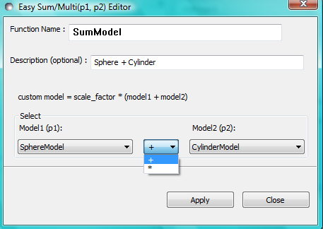This option creates a custom model of the form
Custom Model = scale_factor * (model1 +/* model2)
In the Easy Sum/Multi Editor give the new custom model a function name and brief description (to appear under the Details button on the Fit Page). Then select two existing models, as p1 and p2, and the required operator, ‘+’ or ‘*’ between them. Finally, click the Apply button to generate the model and then click Close.
NB: Any changes to a custom model generated in this way only become effective after it is re-selected from the model drop-down menu on the Fit Page.
Advanced
Selecting this option shows all the custom models in the plugin model folder
C:\Users\[username]\.sasview\plugin_models - (on Windows)
You can edit, modify, and save the Python code in any of these models using the Advanced Custom Model Editor.
NB: Unless you are confident about what you are doing, it is recommended that you only modify lines denoted with the ## <—– comments!
When editing is complete, select Run -> Compile from the Model Editor menu bar. An Info box will appear with the results of the compilation and model unit tests. The model will only be usable if the tests ‘pass’.
To use the model, go to the relevant Fit Page, select the Customized Models category and then select the model from the drop-down menu.
NB: Any changes to a custom model generated in this way only become effective after it is re-selected from the model drop-down menu on the Fit Page.
Delete
Simply highlight the custom model to be removed. This operation is final!
NB: Custom models shipped with SasView cannot be removed in this way.
Writing a Plugin
Advanced users can write their own model in Python and save it to the the SasView plugin_models folder
C:\Users\[username]\.sasview\plugin_models - (on Windows)
in .py format. The next time SasView is started it will compile the plugin and add it to the list of Customized Models.
It is recommended that existing plugin models be used as templates.
Fitting Options
It is possible to specify which optimiser SasView should use to fit the data, and to modify some of the configurational parameters for each optimiser.
From Fitting in the menu bar select Fit Options, then select one of the following optimisers:
- DREAM
- Levenberg-Marquardt
- Quasi-Newton BFGS
- Differential Evolution
- Nelder-Mead Simplex
The DREAM optimiser is the most sophisticated, but may not necessarily be the best option for fitting simple models. If uncertain, try the Levenberg-Marquardt optimiser initially.
These optimisers form the Bumps package written by P Kienzle. For more information on each optimiser, see the Fitting Documentation.
Fitting Limits
By default, SasView will attempt to model fit the full range of the data; ie, across all Q values. If necessary, however, it is possible to specify only a sub-region of the data for fitting.
In a FitPage or BatchPage change the Q values in the Min and/or Max text boxes. Vertical coloured bars will appear on the graph with the data and ‘theory’ indicating the current Q limits (red = Qmin, purple = Qmax).
To return to including all data in the fit, click the Reset button.
Shortcuts
Copy/Paste Parameters
It is possible to copy the parameters from one Fit Page and to paste them into another Fit Page using the same model.
To copy parameters, either:
- Select Edit -> Copy Params from the menu bar, or
- Use Ctrl(Cmd on Mac) + Left Mouse Click on the Fit Page.
To paste parameters, either:
- Select Edit -> Paste Params from the menu bar, or
- Use Ctrl(Cmd on Mac) + Shift + Left-click on the Fit Page.
If either operation is successful a message will appear in the info line at the bottom of the SasView window.
Bookmark
To Bookmark a Fit Page either:
- Select a Fit Page and then click on Bookmark in the tool bar, or
- Right-click and select the Bookmark in the popup menu.
Status Bar & Console
The status bar is located at the bottom of the SasView window and displays messages, hints, warnings and errors.
At the right-hand side of the status bar is a button marked Console. The Console displays available message history and some run-time traceback information.
During a long task the Console can also be used to monitor the progress.
Single Fit Mode
NB: Before proceeding, ensure that the Single Mode radio button at the bottom of the Data Explorer is checked (see the section Loading Data ).
This mode fits one data set.
When data is sent to the fitting perspective it is plotted in a graph window as markers.
If a graph does not appear, or a graph window appears but is empty, then the data has not loaded correctly. Check to see if there is a message in the Status Bar & Console or in the Console window.
Assuming the data has loaded correctly, when a model is selected a green model calculation (or what SasView calls a ‘Theory’) line will appear in the earlier graph window, and a second graph window will appear displaying the residuals (the difference between the experimental data and the theory) at the same X-data values. See Assessing Fit Quality.
The objective of model-fitting is to find a physically-plausible model, and set of model parameters, that generate a theory that reproduces the experimental data and gives residual values as close to zero as possible.
Change the default values of the model parameters by hand until the theory line starts to represent the experimental data. Then uncheck the tick boxes alongside all parameters except the ‘background’ and the ‘scale’. Click the Fit button. SasView will optimise the values of the ‘background’ and ‘scale’ and also display the corresponding uncertainties on the optimised values.
NB: If no uncertainty is shown it generally means that the model is not very dependent on the corresponding parameter (or that one or more parameters are ‘correlated’).
In the bottom left corner of the Fit Page is a box displaying the normalised value of the statistical χ 2 parameter returned by the optimiser.
Now check the box for another model parameter and click Fit again. Repeat this process until most or all parameters are checked and have been optimised. As the fit of the theory to the experimental data improves the value of ‘chi2/Npts’ will decrease. A good model fit should easily produce values of ‘chi2/Npts’ that are close to zero, and certainly <100. See Assessing Fit Quality.
SasView has a number of different optimisers (see the section Fitting Options). The DREAM optimiser is the most sophisticated, but may not necessarily be the best option for fitting simple models. If uncertain, try the Levenberg-Marquardt optimiser initially.
Simultaneous Fit Mode
NB: Before proceeding, ensure that the Single Mode radio button at the bottom of the Data Explorer is checked (see the section Loading Data ).
This mode is an extension of the Single Fit Mode that fits two or more data sets to the same model simultaneously. If necessary it is possible to constrain fit parameters between data sets (eg, to fix a background level, or radius, etc).
If the data to be fit are in multiple files, load each file, then select each file in the Data Explorer, and Send To Fitting. If multiple data sets are in one file, load that file, Unselect All Data, select just those data sets to be fitted, and Send To Fitting. Either way, the result should be that for n data sets you have 2n graphs (n of the data and model fit, and n of the resulting residuals). But it may be helpful to minimise the residuals plots for clarity. Also see Assessing Fit Quality.
NB: If you need to use a customized model, you must ensure that model is available first (see Adding your own models ).
Method
Now go to each FitPage in turn and:
Select the required category and model;
Unselect all the model parameters;
Enter some starting guesses for the parameters;
Enter any parameter limits (recommended);
Select which parameters will refine (selecting all is generally a bad idea...);
When done, select Constrained or Simultaneous Fit under Fitting in the menu bar.
In the Const & Simul Fit page that appears, select which data sets are to be simultaneously fitted (this will probably be all of them or you would not have loaded them in the first place!).
To tie parameters between the data sets with constraints, check the ‘yes’ radio button next to Add Constraint? in the Fit Constraints box.
NB: You can only constrain parameters that are set to refine.
When ready, click the Fit button on the Const & Simul Fit page, NOT the Fit button on the individual FitPage‘s.
Simultaneous Fits without Constraints
The results of the model-fitting will be returned to each of the individual FitPage‘s.
Note that the chi2/Npts value returned is the SUM of the chi2/Npts of each fit. To see the chi2/Npts value for a specific FitPage, click the Compute button at the bottom of that FitPage to recalculate. Also see Assessing Fit Quality.
Simultaneous Fits with Constraints
Use the Easy Setup drop-down buttons in the Const & Simul Fit page to set up constraints between FitPage‘s.
Constraints will generally be of the form
Mi Parameter1 = Mj.Parameter1
however the text box after the ‘=’ sign can be used to adjust this relationship; for example
Mi Parameter1 = scalar * Mj.Parameter1
A ‘free-form’ constraint box is also provided.
Many constraints can be entered for a single fit.
The results of the model-fitting will be returned to each of the individual FitPage‘s.
Note that the chi2/Npts value returned is the SUM of the chi2/Npts of each fit. To see the chi2/Npts value for a specific FitPage, click the Compute button at the bottom of that FitPage to recalculate. Also see Assessing Fit Quality.
Batch Fit Mode
NB: Before proceeding, ensure that the Single Mode radio button at the bottom of the Data Explorer is checked (see the section Loading Data ). The Batch Mode button will be used later on!
This mode sequentially fits two or more data sets to the same model. Unlike in simultaneous fitting, in batch fitting it is not possible to constrain fit parameters between data sets.
If the data to be fit are in multiple files, load each file in the Data Explorer. If multiple data sets are in one file, load just that file. Unselect All Data, then select a single initial data set to be fitted. Fit that selected data set as described above under Single Fit Mode .
NB: If you need to use a customized model, you must ensure that model is available first (see Adding your own models ).
Method
Now Select All Data in the Data Explorer, check the Batch Mode radio button at the bottom of that panel and Send To Fitting. A BatchPage will be created.
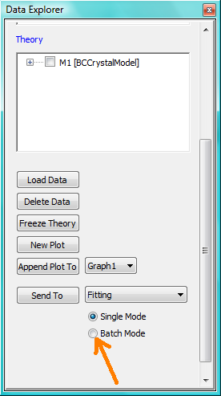NB: The Batch Page can also be created by checking the Batch Mode radio button and selecting New Fit Page under Fitting in the menu bar.
Using the drop-down menus in the BatchPage, now set up the same data set with the same model that you just fitted in single fit mode. A quick way to set the model parameter values is to just copy them from the earlier Single Fit. To do this, go back to the Single Fit FitPage, select Copy Params under Edit in the menu bar, then go back to the BatchPage and Paste Params.
When ready, use the Fit button on the BatchPage to perform the fitting, NOT the Fit button on the individual FitPage‘s.
Unlike in single fit mode, the results of batch fits are not returned to the BatchPage. Instead, a spreadsheet-like Grid Window will appear.
If you want to visually check a graph of a particular fit, click on the name of a Data set in the Grid Window and then click the View Fits button. The data and the model fit will be displayed. If you select mutliple data sets they will all appear on one graph.
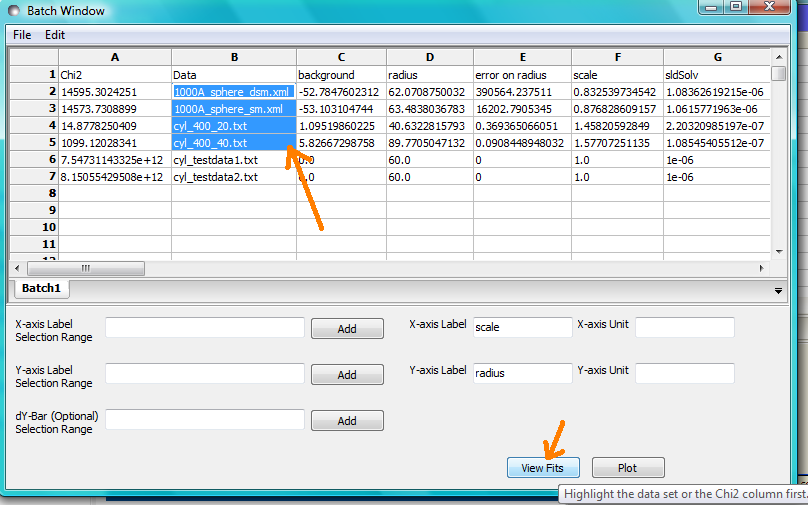NB: In theory, returning to the BatchPage and changing the name of the I(Q) data source should also work, but at the moment whilst this does change the data set displayed it always superimposes the ‘theory’ corresponding to the starting parameters.
If you select a ‘Chi2’ value and click the View Fits button a graph of the residuals for that data set is displayed. Again, if you select multiple ‘Chi2’ values then all the residuals data will appear on one graph. Also see Assessing Fit Quality.
Chain Fitting
By default, the same parameter values copied from the initial single fit into the BatchPage will be used as the starting parameters for all batch fits. It is, however, possible to get SasView to use the results of a fit to a preceding data set as the starting parameters for the next fit in the sequence. This variation of batch fitting is called Chain Fitting, and will considerably speed up model-fitting if you have lots of very similar data sets where a few parameters are gradually changing. Do not use chain fitting on disparate data sets.
To use chain fitting, select Chain Fitting under Fitting in the menu bar. It toggles on/off, so selecting it again will switch back to normal batch fitting.
Grid Window
The Grid Window provides an easy way to view the results from batch fitting. It will be displayed automatically when a batch fit completes, but may be opened at any time by selecting Show Grid Window under View in the menu bar.
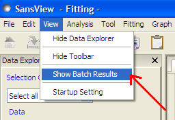Once a batch fit is completed, all model parameters are displayed but not their uncertainties. To view the uncertainties, click on a given column then go to Edit in the menu bar, select Insert Column Before and choose the required data from the list. An empty column can be inserted in the same way.
To remove a column from the grid, click on the column header and choose Remove Column under Edit in the menu bar. The same functionality also allows you to re-order columns.
NB: You cannot insert/remove/re-order the rows in the Grid Window.
All of the above functions are also available by right-clicking on a column label.
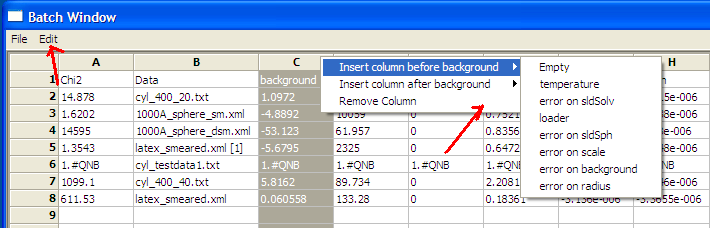NB: If there is an existing Grid Window and another batch fit is performed, an additional ‘Table’ tab will be added to the Grid Window.
The parameter values in the currently selected table of the Grid Window can be output to a CSV file by choosing Save As under File in the (Grid Window) menu bar. The default filename includes the date and time that the batch fit was performed.
Saved CSV files can be reloaded by choosing Open under File in the Grid Window menu bar. The loaded parameters will appear in a new table tab.
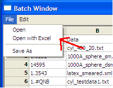NB: Saving the Grid Window does not save any experimental data, residuals or actual model fits. Consequently if you reload a saved CSV file the ability to View Fits will be lost.
Parameter Plots
Any column of numeric parameter values can be plotted against another using the Grid Window. Simply select one column at the time and click the Add button next to the required X/Y-axis Selection Range text box. When both the X and Y axis boxes have been completed, click the Plot button.
When the Add button is clicked, SasView also automatically completes the X/Y-axis Label text box with the heading from Row 1 of the selected table, but different labels and units can be entered manually.
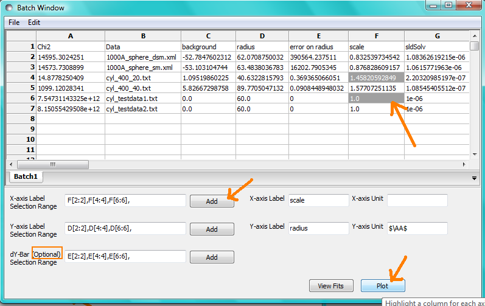The X/Y-axis Selection Range can be edited manually. The text control box recognises the operators +, -, *, /, or ‘pow’, and allows the following types of expression :
if an axis label range is a function of 1 or more columns, write this type of expression
constant1 * column_name1 [minimum row index : maximum row index] operator constant2 * column_name2 [minimum row index : maximum row index]
Example: radius [2 : 5] -3 * scale [2 : 5]
if only some values of a given column are needed but the range between the first row and the last row used is not continuous, write this type of expression
column_name1 [minimum row index1 : maximum row index1] , column_name1 [minimum row index2 : maximum row index2]
Example: radius [2 : 5] , radius [10 : 25]
Note
This help document was last changed by Steve King, 04Jun2015